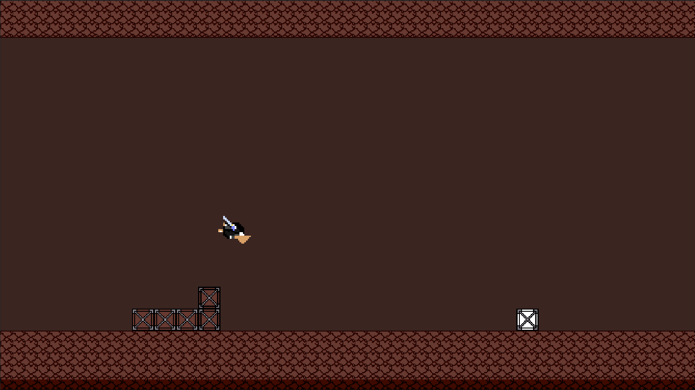
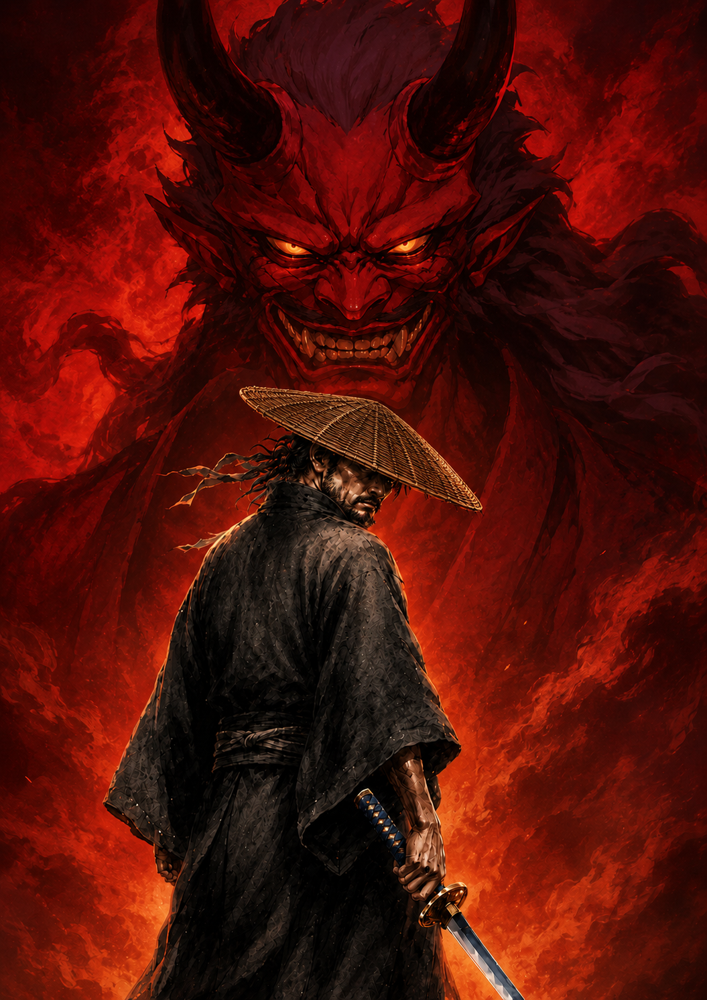
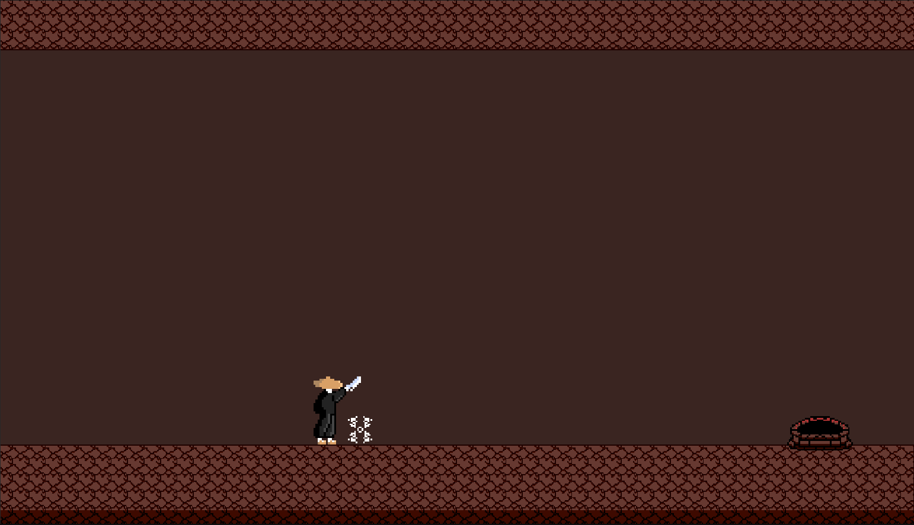
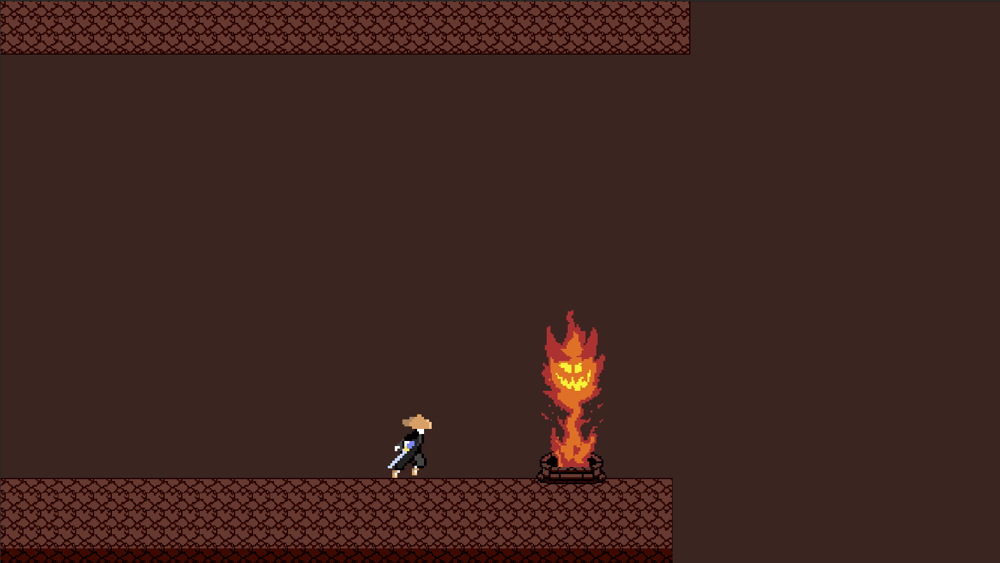
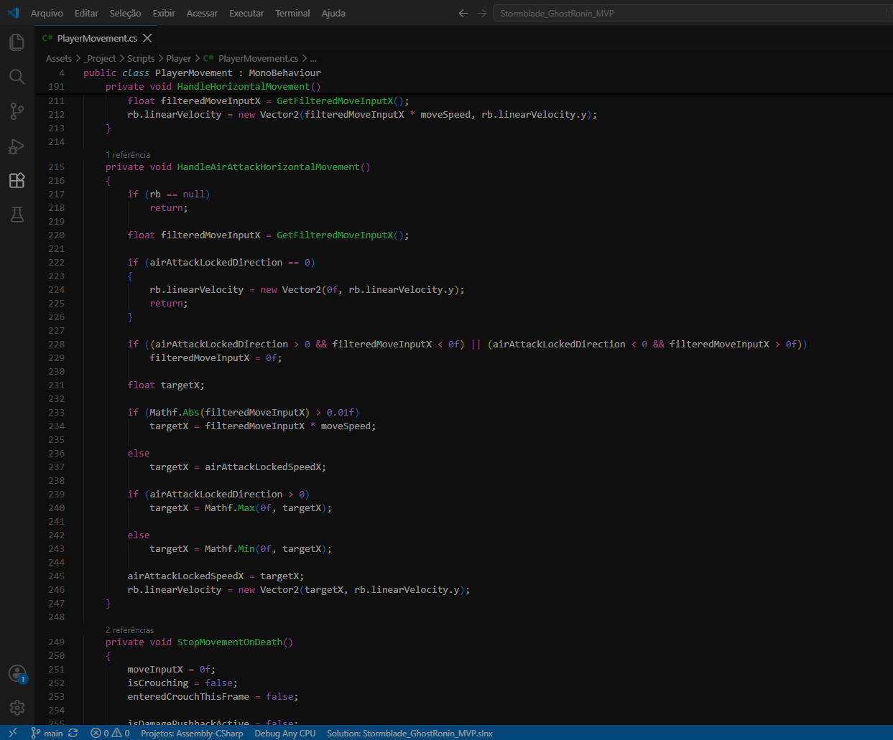

Avanço lateral
A estrutura do jogo prioriza avanço direto, leitura limpa do personagem e progressão objetiva pelo cenário.
Projeto principal
Um ronin misterioso surge da tempestade para enfrentar o exército de Onis e avançar rumo ao castelo do Rei Oni.

Gameplay preview
Recorte inicial do vertical slice, mostrando movimentação, pulo, avanço lateral, obstáculos e hazards em funcionamento.
Visão geral
Stormblade é um beat 'em up 2D com elementos de plataforma, desenvolvido em Unity/C# para PC/Steam.
O projeto está sendo criado como um vertical slice/MVP de escopo controlado, com foco em movimentação responsiva, combate legível, leitura visual forte e identidade sombria inspirada em ronins, tempestades e Onis.
Gameplay

A estrutura do jogo prioriza avanço direto, leitura limpa do personagem e progressão objetiva pelo cenário.

Um botão principal de ataque seleciona o golpe conforme o estado do personagem: em pé, agachado ou no ar.

Ameaças ambientais reforçam a atmosfera sobrenatural e exigem leitura clara de perigo.
Por trás do jogo
A página de sistemas mostra a arquitetura modular do projeto, incluindo input, movimento, combate, animação, hitbox, hurtbox, dano e vida.
Ver sistemas técnicos
Carregando...